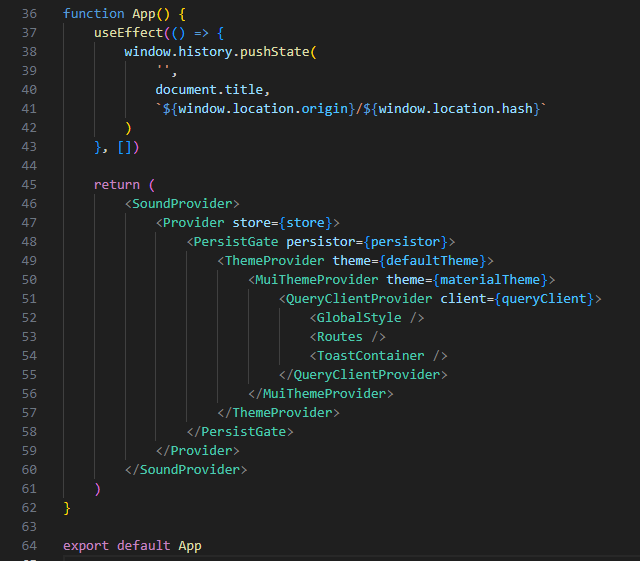
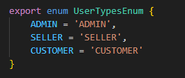

2.3- Roteamento de páginas do Aplicativo
O controle de navegação entre as páginas se inicia no elemento HTML raiz do aplicativo, inicializado no arquivo index.tsx, conforme explicado na página que apresenta a estrutura de pastas, aqui Estrutura de Pastas do Projeto.
Após as inicializações necessárias, a renderização do elemento raiz (método render(...) abaixo) passa o controle do fluxo do aplicativo para o componente raiz do aplicativo, chamado App.

A seguir, descrevemos o componente App.
Componente App
Este componente é declarado no arquivo App.tsx, sendo o componente raiz do aplicativo, que deve ser, sempre, chamado de 'App'.
O 'coração' deste componente está no return de renderização, onde o componente que controla a renderização de todas as páginas e sub-componentes, chamado por padrão de 'Router', é envolto (wrapped) por vários contextos React que serão disponibilizados a todos os componentes do aplicativo.

SoundProvider é um componente provedor de contexto, desenvolvido pela BuildBox no arquivo 'src/context/SoundProvider.tsx', que utiliza a biblioteca use-sound, e basicamente provê um hook capaz de reproduzir arquivos .mp3.
Provider é o componente da biblioteca redux que permite o armazenamento de informações, tais como informações do cliente ou transação, etc., de forma estruturada na máquina cliente.
PersistGate é o componente, da biblioteca redux-persist que permite a persistência dos dados salvos no store redux.
ThemeProvider é um componente, da biblioteca styled-components, que permite definir um tema default para os aplicativos.
MuiThemeProvider é um segundo componente provedor de tema, que permite addicionar mais informações default ao tema default nos aplicativos, neste caso usando os recursos da biblioteca MUI.
QueryClient e QueryClientProvider são componentes, da biblioteca react-query, que padronizam e facilitam a codificação da comunicação com API externas.
Além dos contextos acima, temos:
-
Um styled-component, chamado GlobalStyle, mantido no arquivo 'src/styles/GlobalStyle.ts', que define o .css geral default de todas as páginas.
-
Um componente chamado ToastContainer, parte da biblioteca react-toastify, usado para exibição de mensagens para o usuário.
Componente Routes
O código deste componente está na pasta /src/routes, sendo o componente onde são declaradas todas as páginas e rotas do aplicativo.
Arquivo routes.ts
O arquivo routes declara um array de objetos do tipo IRoute, que servem para configurar as seguintes informações de cada página do aplicativo:
export interface IRoute {
element: string | FunctionComponent<{}> | ComponentClass<{}>
title?: string
path: string
secure?: boolean
fullPage?: boolean
layout?: boolean
menu?: boolean
accessType?: UserTypesEnum[]
children?: IRoute[]
}
Esta interface IRoute está definida no arquivo /src/routes/types.
Onde:
element é uma referência para o componente React que implemente a página.
title é uma string com o título da página.
path é o caminho da página no servidor.
secure é uma variável booleana, onde true indica que a página só pode ser acessada com por um usuário logado no aplicativo, ou seja que tenha sido autenticado.
fullPage, variável cujo uso foi descontinuado.
layout, variável booleana onde true indica que deve ser usado um layout externo, com Header e Menu Lateral, definidos no componente Layout, na pasta /src/components/Layout, em torno do componente da página. No caso do valor da variável ser false, ou undefined, será usado apenas o layout definido pelo componente da página.
menu, variável booleana cujo uso foi descontinuado.
accessType, é um array que contém todos os perfis de usuário que podem acessar a página. Se Se esta variável contiver um array de valores de perfil, somente os usuários que tenham um desses perfis poderão acessá-la.
children é uma variável que contém a referência para o componente React que implementa a página.
Os tipos de perfis de usuários são arbitrários por aplicativo e devem ser definidos como um Enum no arquivo /src/routes/types.ts, juntamente com a definição da interface IRoute.
Um exemplo:

Arquivo index.tsx
O arquivo index.tsx:
- implementa o mecanismo genérico que chama a renderização de todas as páginas configuradas no arquivo routes.ts
- controla o acesso a cada página, por meio da função handlePermission(...)
- redireciona o fluxo para a página de Login, caso o usuário ainda não esteja logado (autenticado).
- trata redirecionamentos específicos, no caso de Erro 4, retornado pelo backend, através do componente Redirect, implementado no arquivo /src/routes/redirect.tsx.